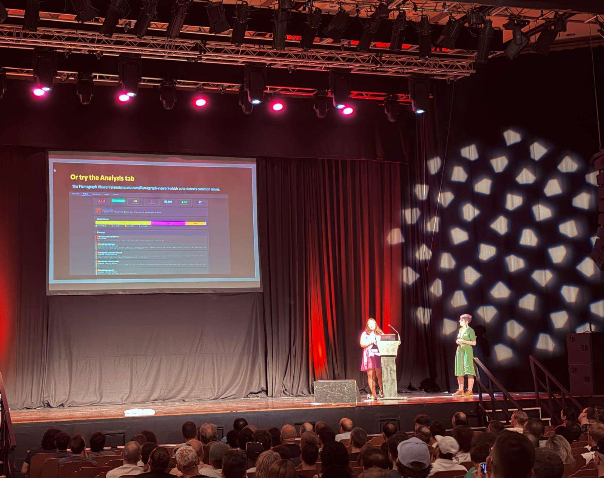

My work, Dentally, sent a healthy contingent down for Brighton Ruby this year. First up after the keynote was the talk I was most looking forward to. You’ll appreciate why if you look at the titles on my technical talks page. It was a talk about how to use flamegraphs to find performance problems.
The talk will be released soon on Ruby Events: Performance Engineering for Everyone - Elena Tănăsoiu and Emma Gabriel
The talk also included a section about convincing an organisation to invest in web performance. A great idea Emma put forward was to use data, from a real customer of yours, hopefully one representative of your user base. Then your goal can shift away from the abstract. You should find out for a real customer what is painful and what this cost them. Then do your best to make this customer happy and keep them using your product. The idea was this is a more convincing approach than referring to general research on the business advantage of web performance.

A few of my thoughts which aren’t straight from the talk:
Elena was kind enough to answer a few of my questions afterwards - she is an absolute font of knowledge and a treasure to the Ruby community.
In my next post I’ll share more of my impressions of the day.